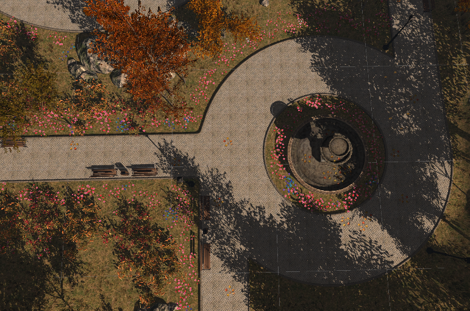
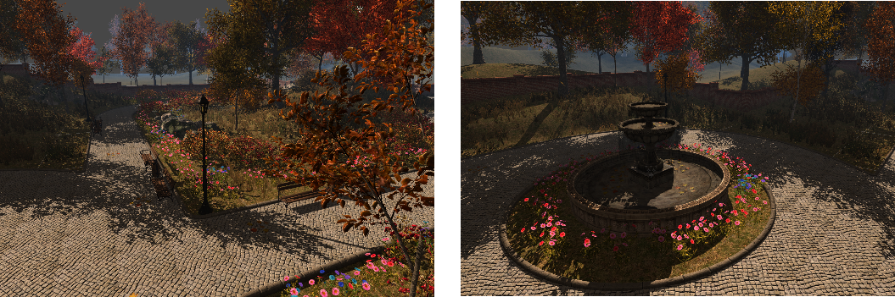
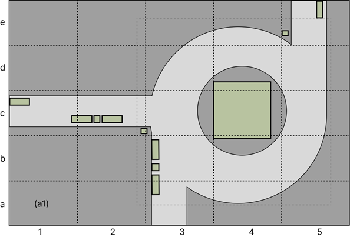
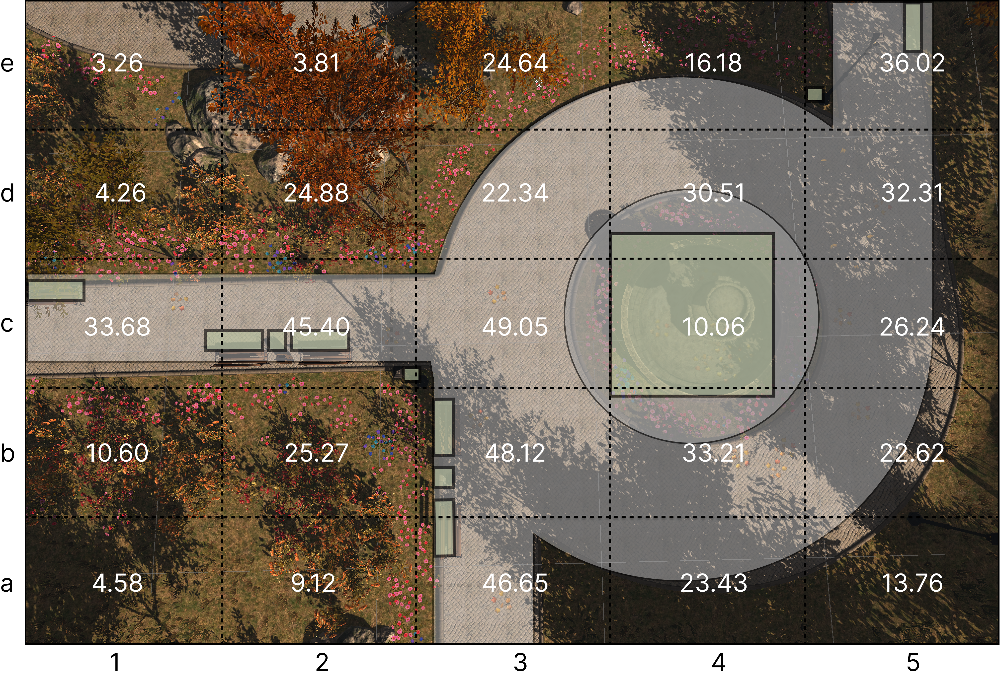

Architecting Social VR: Exploring Encounter and Serendipitous Interactions in Virtual Public Spaces
构建社会化VR：探索虚拟公共空间中的偶遇和偶发性互动行为
First release at Github and HCII 2024

Abstract
摘要
In modern urban life, the challenge of fostering meaningful social connec-tions amidst the fast-paced environment is evident. This preliminary re-search explores the potential of virtual reality (VR) as a tool for studying public space design and understanding user behavior within virtual public spaces. It investigates the dynamics of social interactions in VR environ-ments and their relation to virtual public space design. The study aims to contribute to the field in two main ways: firstly, by attempting to utilize VR technology as a research tool for public space design, and secondly, by un-covering user behavior patterns and their implications for virtual reality and virtual public space design. Through qualitative observations, user inter-views, and quantitative data analysis, this research examines how design el-ements such as spatial layout and interactive objects influence user behavior and social dynamics in VR public spaces. The findings of this study offer preliminary insights into the potential of VR technology for public space de-sign research and shed light on user behavior in virtual environments. Fu-ture research will delve into how design elements impact user behavior in virtual public spaces and further utilize the user behavior data. Exploring in-novative VR integration in urban planning to enhance real-world public space design for inclusive social interaction.
在现代城市生活中，在快节奏的环境中促进有意义的社交联系的挑战是显而易见的。这项初步研究探讨了虚拟现实（VR）作为研究公共空间设计和理解虚拟公共空间中用户行为工具的潜力。它调查了VR环境中社交互动的动态及其与虚拟公共空间设计的关系。该研究旨在通过两种主要方式为该领域做出贡献：首先，通过尝试将VR技术作为公共空间设计研究工具，其次，通过揭示用户行为模式及其对虚拟现实和虚拟公共空间设计的影响。通过定性观察、用户访谈和定量数据分析，这项研究考察了空间布局和交互对象如何影响VR公共空间中的用户行为和社会动态。这项研究为VR技术在公共空间设计研究中的潜力提供了初步见解，并揭示了虚拟环境中的用户行为。未来的研究将深入探讨设计元素如何影响虚拟公共空间中的用户行为，并进一步利用用户行为数据。探索创新的城市规划，以促进包容性的社会互动。
Introduction
引言
In the hustle and bustle of modern urban life, meaningful social connections often take a back seat to the frenetic pace of daily routines. Despite the ubiquitous pres-ence of public spaces and personal communication technologies, facilitating genuine human-to-human interactions remains a challenge, particularly those spontaneous encounters that ignite serendipitous interactions. These chance meetings, akin to impromptu conversations with strangers, are widely recognized for their positive social impact, fostering a sense of community and belonging. However, the landscape shifts when we step into virtual realms. Here, individuals actively engage in social interactions, defying the constraints of physical space and time. Virtual public spaces have emerged as fertile ground for exploring social behavior, offering researchers a controlled environment to study the intricacies of human interaction. Against this backdrop, our project aims to harness the power of virtual reality (VR) technology to delve into the realm of serendipitous encounters within public spaces.
在现代城市生活的喧嚣中，有意义的社交联系常常让位于日常生活的疯狂节奏。尽管公共空间和个人通信技术无处不在，促进真正的人与人之间的互动仍然是一个挑战，特别是那些引发偶发性互动的自发性邂逅。这些偶然的相遇，类似于与陌生人的即兴对话，因其积极的社会影响而被广泛认可，培养了社区感和归属感。然而，当我们步入虚拟领域时，情况发生了变化。在这里，个人积极参与社交互动，突破了物理空间和时间的限制。虚拟公共空间已成为探索社会行为的沃土，为研究人员提供了一个受控环境，以研究人类互动的复杂性。在这一背景下，我们的项目旨在利用虚拟现实（VR）技术的力量，深入研究公共空间中偶发性邂逅的领域。
By analyzing user behavior in VR environments, we seek to unravel the underly-ing dynamics of social interactions and investigate how spatial design influences these encounters. Our exploration extends beyond the virtual realm, as we endeavor to draw parallels between virtual and real-world urban public spaces. Insights gleaned from this endeavor hold the potential to inform the design and enhancement of physical spaces, fostering greater connectivity and social cohesion in our urban landscapes.
通过分析VR环境中的用户行为，我们寻求揭示社交互动的潜在动态，并研究空间设计如何影响这些邂逅。我们的探索超越了虚拟领域，因为我们努力在虚拟和现实世界的城市公共空间之间建立联系。从这一努力中获得的见解有可能为物理空间的设计和改进提供信息，促进我们城市景观中更大的连通性和社会凝聚力。
Experiment Design
实验设计
The experiment was designed to study social interactions in virtual public spaces, particularly focusing on "encounter" behavior akin to typical encounters in public parks. The Virtual Garden Party environment, modeled after a public park setting, served as the experimental space.
该实验旨在研究虚拟公共空间中的社交互动，特别关注类似于公共公园中典型邂逅的"相遇"行为。以公园环境为模型的虚拟花园派对环境作为实验空间。
The Virtual Garden Party was constructed in a realistic style, drawing inspiration from real-life public park settings, which are typical public space types. The environment featured a major encounter zone (fountain roundabout), three guiding spaces (park pathways), several interactable objects (fountain, park benches), and soft-restricted zones (grass lawns). While the space offered a degree of openness, air walls were positioned at the boundaries to define the activity area. The spatial layout and distribution of interactive objects in the Virtual Garden Party are illustrated in Fig. 1. The study envisioned the fountain as the primary interaction area, with the pathways serving as secondary interaction area(see Fig. 3).
虚拟花园派对以现实风格构建，灵感来源于现实生活中的公园环境，这是典型的公共空间类型。环境包括一个主要相遇区域（喷泉环岛）、三个引导空间（公园小径）、几个可交互物体（喷泉、公园长椅）以及软限制区域（草坪）。虽然空间提供了一定程度的开放性，但在边界处设置了空气墙以界定活动区域。虚拟花园派对中的空间布局和交互对象分布如图1所示。研究将喷泉设想为主要互动区域，小径作为次要互动区域（见图3）。

Figure 1: Wireframe diagram of the Virtual Garden Party's interactive space, with dashed lines delineating the "Major Encounter Zone," green rectangles representing interactable objects in the environment, white indicating guiding spaces, and dark gray indicating soft-restricted zones.
图1：虚拟花园派对互动空间的线框图，虚线划定"主要邂逅区域"，绿色矩形代表环境中的可交互物体，白色表示引导空间，深灰色表示软限制区域。

Figure 2: Virtual Garden Party Scene.
图2：虚拟花园派对场景。

Figure 3: Secondary Interaction Area (Left), Primary Interaction Area (Right) .
图3：次要互动区域（左），主要互动区域（右）。
Participants were recruited and divided into three groups based on their past experience with virtual reality:
- Group A: Individuals with no virtual reality experience (9 participants, aged 20-30, 5 female, 4 male)
- Group B: Individuals with virtual reality experience but no virtual reality social experience (9 participants, aged 20-30, 3 female, 6 male)
- Group C: Individuals with virtual reality social experience (12 participants, aged 22-27, 5 female, 7 male)
A total of 30 participants were recruited, with each experimental group comprising 3 members from group A, 3 from group B, and 4 from group C.
All participants provided informed consent before participating, and their privacy and confidentiality were strictly maintained throughout the study.
参与者根据他们过去的虚拟现实经验被招募并分为三组：
- A组：没有虚拟现实经验的个人（9名参与者，年龄20-30岁，5名女性，4名男性）
- B组：有虚拟现实经验但没有虚拟现实社交经验的个人（9名参与者，年龄20-30岁，3名女性，6名男性）
- C组：有虚拟现实社交经验的个人（12名参与者，年龄22-27岁，5名女性，7名男性）
共招募了30名参与者，每个实验组由A组3名成员、B组3名成员和C组4名成员组成。
所有参与者在参与前都提供了知情同意，并且在整个研究过程中严格保护了他们的隐私和保密性。
Participants were spread into random area, instructed to spend 20 minutes in the Virtual Garden Party, engaging in natural social interactions without specific tasks or guidance. Prior to the experiment, they were informed that it was a virtual reality interaction party, and no specific task were granted other than attempting to interact with other participants. Participants can use the microphone to communicate with other participants directly, but the conversations are not one-on-one; instead, they can be heard by others in the environment, simulating public conversation.
参与者被分散到随机区域，指示在虚拟花园派对中花费20分钟，进行自然社交互动，没有特定任务或指导。在实验前，他们被告知这是一个虚拟现实互动派对，除了尝试与其他参与者互动外，没有分配特定任务。参与者可以使用麦克风直接与其他参与者交流，但对话不是一对一的；相反，环境中的其他人可以听到这些对话，模拟公共环境对话。
Throughout the experiment, participants used realistic-style avatars provided by the researchers and were free to select their preferred avatar from the available options. The participants' avatars can interact with interactable objects in the scene but cannot interact with other avatars.
在整个实验过程中，参与者使用研究人员提供的写实风格虚拟形象，可以从可用选项中自由选择他们喜欢的虚拟形象。参与者的虚拟形象可以与场景中的可交互物体互动，但不能与其他虚拟形象互动。
During the experiment, a multifaceted approach was employed to collect data on participants' interactions and experiences within the Virtual Garden Party environment. Experimenters closely observed participants' distribution and activities throughout the space, providing qualitative insights into their navigation and engagement patterns. The primary data collection method involved recording user-to-user communication, offering a firsthand perspective on social exchanges in different zones. Additionally, the duration of participants' stays, as well as their distribution and circulation patterns, were meticulously recorded to provide quantitative insights into their engagement with specific areas. Following the experiment, participants underwent interviews to gather qualitative feedback on their experience, impressions of the space, and social interactions, with special attention given to noteworthy interactions. Group interviews were conducted to collectively discuss these interactions. As part of the post-experiment assessment, participants completed the Social Interaction Anxiety Scale (SIAS), providing additional insights into their levels of discomfort or anxiety related to social interactions within the virtual environment.
在实验过程中，采用了多方面的方法来收集参与者在虚拟花园派对环境中的互动和体验数据。实验人员密切观察参与者在整个空间中的分布和活动，提供关于他们导航和参与模式的定性见解。主要的数据收集方法包括记录用户之间的通信，为不同区域的社交交流提供第一手视角。此外，还精细记录了参与者停留的时间以及他们的分布和流动模式，以提供关于他们与特定区域互动的定量见解。实验结束后，参与者接受了访谈，收集关于他们体验、对空间的印象和社交互动的定性反馈，特别关注值得注意的互动。进行了小组访谈，集体讨论这些互动。作为实验后评估的一部分，参与者完成了社交互动焦虑量表(SIAS)，提供了关于他们在虚拟环境中与社交互动相关的不适或焦虑水平的额外见解。
Result
结论
In the experiment, we analyzed participants' dwell time in various areas of the virtual space as a measure of social interaction frequency. Longer dwell times indicated more frequent social interactions in specific zones. Illustration of the Virtual Garden Party's area division is illustrated in Fig. 4 and Participants' dwell times are illustrated in Fig. 5.
在实验中，我们分析了参与者在虚拟空间各区域的停留时间，作为社交互动频率的衡量标准。较长的停留时间表明特定区域内社交互动更加频繁。虚拟花园派对的区域划分如图4所示，参与者的停留时间如图5所示。

Figure 4: Illustration of the Virtual Garden Party's Area Division, with Regions Delineated by Coor-dinates, Such as (a1).
图4：虚拟花园派对区域划分示意图，区域由坐标划分，如(a1)。

Figure 5: The Total Duration of Stay within the Area (minutes).
图5：各区域总停留时间（分钟）。
The central area, marked as c3, emerged as the primary hub for interaction, with hotspots extending along pathways and gradually diminishing in intensity towards the periphery. Interestingly, pathways with interactable objects experienced less reduction in dwell time compared to those without. Conversely, dwell times were notably lower at the edges of the activity area. Soft-restricted zones had a minimal impact on dwell times near interaction hotspots but significantly affected areas further from the center. Notably, area a1 within the soft-restricted zone stood out as one of the least frequented areas. Additionally, areas with obstacles, such as e2, experienced notably low visitation rates. Despite obstacles, area c4, situated at the interaction hotspot center, still attracted visitors, albeit to a lesser extent. Areas e1, e2, and d1, influenced by various factors, emerged as the least visited zones in the virtual space.
标记为c3的中心区域成为互动的主要枢纽，热点沿着路径延伸，并向周边逐渐减弱。有趣的是，与可交互物体的路径相比，没有可交互物体的路径停留时间减少更明显。相反，在活动区域边缘的停留时间明显较低。软限制区域对靠近互动热点的停留时间影响很小，但对远离中心的区域影响显著。值得注意的是，软限制区域内的a1区域成为访问频率最低的区域之一。此外，有障碍物的区域，如e2，访问率明显较低。尽管有障碍物，位于互动热点中心的c4区域仍然吸引了访客，尽管程度较小。受各种因素影响，e1、e2和d1区域成为虚拟空间中访问最少的区域。
Discussion
讨论
Combining the experimental data with post-experiment interviews, the study elucidates participants' perspectives on virtual space and social behavior within it.
结合实验数据和实验后访谈，本研究阐明了参与者对虚拟空间及其中社交行为的观点。
At the onset of the experiment, participants were randomly assigned to different areas. Group A participants, unfamiliar with virtual reality environments, tended to explore their immediate surroundings cautiously and engaged more with nearby participants upon initial contact. In contrast, the majority of Group B and Group C participants bypassed prolonged exploration and headed directly to points of interest within the environment, with most prioritizing interaction around the central fountain.
在实验开始时，参与者被随机分配到不同区域。A组参与者不熟悉虚拟现实环境，倾向于谨慎探索周围环境，并在初次接触时更多地与附近参与者互动。相比之下，大多数B组和C组参与者绕过了长时间的探索，直接前往环境中的兴趣点，大多数人优先选择在中央喷泉周围互动。
Participants reflected on how certain environmental features influenced their behavior, such as a preference for pathways over grassy areas. These observations revealed nuanced distinctions in social behavior shaped by individuals' perceptions of the virtual environment's realism and their willingness to embrace unconventional actions typical of virtual spaces.
参与者反思了某些环境特征如何影响他们的行为，例如偏好走在路径上而非草地区域。这些观察揭示了社交行为的细微差异，这些差异由个体对虚拟环境真实性的感知以及他们接受虚拟空间典型非常规行为的意愿所塑造。
The virtual environment's virtuality and its resemblance to real-world settings emerged as a prevalent theme. Participants with prior virtual reality experience (Groups B and C) exhibited a greater propensity for engaging in behaviors not typically seen in reality, such as standing on benches or fountains. Conversely, participants more focused on the virtual environment's realism (e.g., Group A) tended to employ real-world logic and moral norms to guide their behavior. These differing perspectives resulted in distinct social styles, with some participants disregarding virtual social norms and others gradually abandoning real-world behavioral constraints to explore the possibilities of the virtual space. Some Group C participants adopted a hybrid approach, reflecting a blend of both perspectives shaped by their prior experiences in virtual reality social interactions.
虚拟环境的虚拟性及其与现实世界设置的相似性成为一个普遍主题。有先前虚拟现实经验的参与者（B组和C组）表现出更大倾向于参与现实中不常见的行为，如站在长椅或喷泉上。相反，更关注虚拟环境真实性的参与者（如A组）倾向于采用现实世界的逻辑和道德规范来指导他们的行为。这些不同的观点导致了不同的社交风格，一些参与者忽视虚拟社交规范，而其他人则逐渐放弃现实世界的行为约束，探索虚拟空间的可能性。一些C组参与者采用了混合方法，反映了由他们在虚拟现实社交互动中的先前经验塑造的两种观点的融合。
The mutual influence of participants' behaviors in the virtual environment was evident, exhibiting traits characteristic of both virtual and real-world social interactions. Overall, participants perceived the virtual space as enhancing their willingness to interact with strangers, particularly in areas of frequent engagement deemed more intriguing, irrespective of their active participation. However, observations of participant trajectories revealed that the sustained allure of social hotspots fluctuated over time, with participants gradually dispersing from the central hub to form new social clusters in peripheral areas. This cyclical pattern of social hotspot dynamics underscored the dynamic nature of virtual social interactions and their propensity to form transient focal points within the virtual environment.
参与者在虚拟环境中行为的相互影响是显而易见的，表现出虚拟和现实世界社交互动的特征。总体而言，参与者认为虚拟空间增强了他们与陌生人互动的意愿，特别是在被认为更有趣的频繁互动区域，无论他们是否积极参与。然而，对参与者轨迹的观察显示，社交热点的持续吸引力随时间波动，参与者逐渐从中心枢纽分散，在周边区域形成新的社交群集。这种社交热点动态的循环模式强调了虚拟社交互动的动态性质及其在虚拟环境中形成短暂焦点的倾向。
Future Work
未来的工作
Future research endeavors could explore various avenues to deepen our understand-ing of social interactions within virtual public spaces. Initially, investigations into the impact of design elements, such as spatial layout and interactive objects, on user behavior and social dynamics could offer valuable insights for optimizing virtual environments to enhance social engagement.
未来的研究努力可以探索各种途径，以深化我们对虚拟公共空间中社交互动的理解。首先，调查设计元素（如空间布局和交互式对象）对用户行为和社交动态的影响，可以为优化虚拟环境以增强社交参与提供宝贵见解。
Furthermore, future work will continue to leverage virtual reality as a tool for studying public spaces, delving into the data collected during the process to reflect on participants' behavior and gain deeper insights into virtual reality social interac-tions. This exploration should particularly focus on individual traits, such as social anxiety or interpersonal communication competence, which may significantly influ-ence virtual social interactions, leading to a more nuanced understanding of user preferences and needs.
此外，未来的工作将继续利用虚拟现实作为研究公共空间的工具，深入研究在此过程中收集的数据，以反思参与者的行为并获得对虚拟现实社交互动的更深入见解。这种探索应特别关注个体特质，如社交焦虑或人际沟通能力，这些可能会显著影响虚拟社交互动，从而对用户偏好和需求有更细致的理解。
Lastly, exploring innovative approaches to integrate virtual and augmented reality technologies with traditional urban planning processes could offer novel strategies for designing inclusive and vibrant real-world public spaces. Insights gleaned from virtual environments can inform the creation of more engaging and accessible public spaces that cater to the diverse needs of inhabitants and promote social interaction.
最后，探索将虚拟和增强现实技术与传统城市规划过程相结合的创新方法，可以为设计包容性和充满活力的现实世界公共空间提供新策略。从虚拟环境中获得的见解可以为创建更具吸引力和可访问性的公共空间提供信息，以满足居民的多样化需求并促进社交互动。
Ref.
- Wenli Jiang, & Chong Cao. 2021. Reconstruction: A Motion Driven Interactive Artwork Inspired by Chinese Shadow Puppet. In Proceedings of the 29th ACM International Conference on Multimedia (pp. 1441-1442).
- Carr, S.: Public space. Cambridge University Press (1992)
- Hillier, B., Hanson, J.: The social logic of space. Cambridge university press (1989)
- Gehl, J.: Life between buildings. Island Press (2011)
- Mehta, V.: Evaluating public space. J. Urban Des. 19(1), 53–88 (2014)
- Pan, X., Hamilton, A.F.D.C.: Why and how to use virtual reality to study human social interaction: the challenges of exploring a new research landscape. Br. J. Psychol. 109(3), 395–417 (2018)
- Brown, C., Efstratiou, C., Leontiadis, I., Quercia, D., Mascolo, C.: Tracking serendipitous interactions: how individual cultures shape the office. In: Proceedings of the 17th ACM Conference on Computer Supported Cooperative Work & Social Computing, pp. 1072–1081. Association for Computing Machinery, New York, NY, USA (2014)
- Carmona, M.: Principles for public space design, planning to do better. Urban Design Int. 24, 47–59 (2019)
- Mattick, R.P., Clarke, J.C.: Development and validation of measures of social phobia scrutiny fear and social interaction anxiety. Behav. Res. Ther. 36(4), 455–470 (1998)